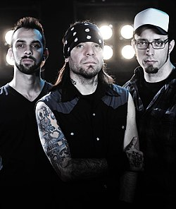
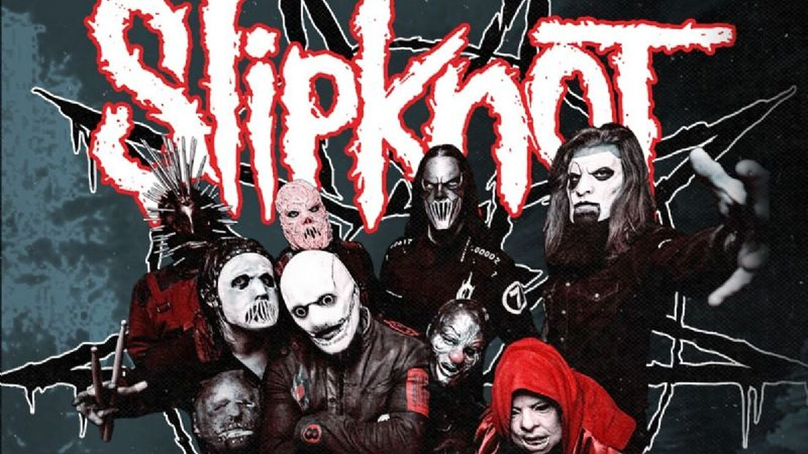
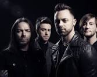

fue un power trio argentino fundado en el 2000 por Marcelo Corvalán, Andrés Vilanova y Hernán Langer. La banda se definió en una primera época como punk rock / nu metal,1 aunque posteriormente amplió su sonido hacia el groove metal. Durante su trayectoria grabaron 6 álbumes de estudio y un álbum en vivo.
es una banda estadounidense de metal alternativo formada en 1995 en Des Moines, Iowa, Estados Unidos. Sus integrantes en la actualidad son Corey Taylor, Craig Jones, Jim Root, Mick Thomson, Shawn Crahan y Sid Wilson. Slipknot es conocida por las máscaras características de cada uno de sus miembros, que cambian conforme han sacado más discografía.
Bullet for My Valentine es una banda de heavy metal y metalcore originaria de Bridgend, Gales, que se formó en 1998. La banda se hizo conocida a nivel mundial gracias a su álbum debut "The Poison" (2005), que incluía canciones como "Tears Don't Fall" y "All These Things I Hate (Revolve Around Me)".
banda estadounidense de rock alternativo procedente de Agoura Hills, California formada en 1996. Integrada por Mike Shinoda, Dave Farrell, Joe Hahn, Brad Delson, Rob Bourdon y Chester Bennington, este último como voz principal.